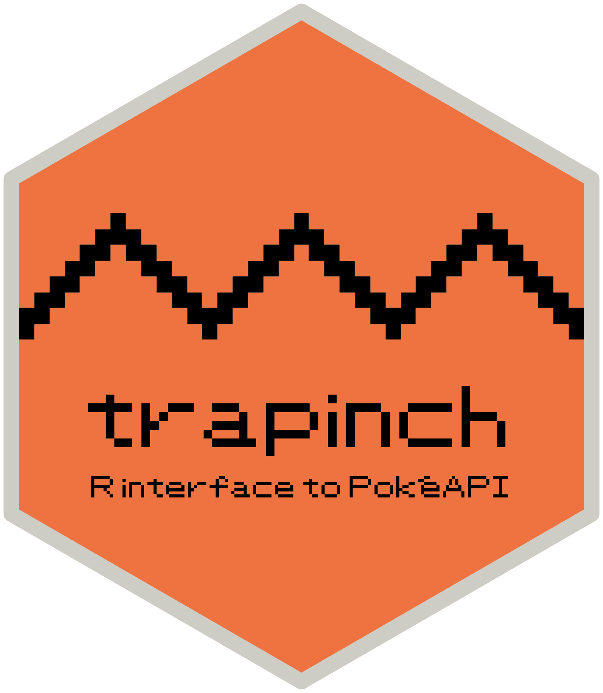
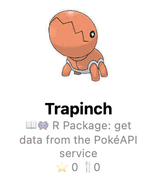

{kind=link}
install.packages("remotes") # if not yet installed
remotes::install_github("matt-dray/trapinch") # v0.0.1 in this post
library(trapinch)
tl;dr
I’ve used the {httr2} R package to create {trapinch}, a package that wraps PokéAPI for fetching Pokémon data.
Note
I had found a couple of older, non-{httr2} PokéAPI wrappers for R (see footnotes), but had somehow missed one that already uses {httr2}: see Ash Baldry’s {pokeapi} package, which he wrote months ago!
{httr} me baby one more time
The {httr2} package lets you talk to the internet. Or, if you’re fancy, it ‘helps you deal programmatically with HTTP requests and responses’ so you can use it to fetch data from Application Programming Interfaces (APIs).
{httr2} has functions that are prefixed consistently (req_*(), resp_()*, etc), are narrow in scope, pipeable (|>) and which return nice errors and messages. These are neat improvements on the original {httr} package.
I’ve used {httr} before to explore R package startup messages and detect linkrot. It’s time to try out {httr2}. What simple API can I wrap into an R package?1
Poke an API
Regular readers will be unsurprised that I’ve chosen the PokéAPI API for fetching all sorts of information related to the Pokémon game franchise.2
PokéAPI provides a relatively simple API. You don’t need to sign-up or use API tokens, you can only read (‘GET’) data from it’s not rate-limited.
URL paths for fetching data are also straightforward: you append an endpoint and a resource of interest to the base URL in the form https://pokeapi.co/api/v2/{endpoint}/{resource}.3
In other words, you could type https://pokeapi.co/api/v2/pokemon/lotad in your browser and the API would respond with a JSON file containing data about Lotad, the best Pokémon.
{httr2} lets us do this programmatically and can return a more R-friendly list object.
It’s a trapinch
So, I’ve created the {trapinch} package.
It’s a proof of concept; a work in progress. There’s probably bugs. I’m sharing it in case I don’t take it any further, or if you want to contribute an issue or pull request.
You can download it from GitHub. It depends on {httr2} (obviously), {rcurl} and R version 4.1 or higher4 and can be downloaded from GitHub:
Don’t be surprised if function names or general functionality change in future. In particular, I’d like to look at throttling (limiting the number of API calls to prevent misuse) and to provide sensible errors for timeouts or if the service is down.
Gotta GET ’em all
There’s a generic low-level function, get_pokeapi(), to which you pass the endpoint and resource ID (numeric) or name (character) of interest. Each endpoint also has its own dedicated function, like get_item() or get_move() that calls get_pokeapi() under the hood.
You can look at the inbuilt resource_lookups list to get a dataframe of resource IDs and names for each endpoint, as well as the full URL needed to query the API. Here’s the first few:
head(names(resource_lookups))[1] "ability" "berry" "berry-firmness" "berry-flavor"
[5] "characteristic" "contest-effect"So here’s the first few rows of the resource dataframe for the ‘pokemon’ endpoint:
head(resource_lookups[["pokemon"]]) id name url
1 1 bulbasaur https://pokeapi.co/api/v2/pokemon/1/
2 2 ivysaur https://pokeapi.co/api/v2/pokemon/2/
3 3 venusaur https://pokeapi.co/api/v2/pokemon/3/
4 4 charmander https://pokeapi.co/api/v2/pokemon/4/
5 5 charmeleon https://pokeapi.co/api/v2/pokemon/5/
6 6 charizard https://pokeapi.co/api/v2/pokemon/6/One of these resource names is ‘mew’, the legendary first-generation Pokémon.5 You could use get_pokeapi("pokemon", "mew") to retrieve its data, or more simply:
mew <- get_pokemon("mew")The function returns a list of lists, which is parsed from the JSON response returned by the API. So for the ‘pokemon’ endpoint we get 18 different elements of various classes:
str(mew, max.level = 1)List of 18
$ abilities :List of 1
$ base_experience : int 300
$ forms :List of 1
$ game_indices :List of 20
$ height : int 4
$ held_items :List of 1
$ id : int 151
$ is_default : logi TRUE
$ location_area_encounters: chr "https://pokeapi.co/api/v2/pokemon/151/encounters"
$ moves :List of 363
$ name : chr "mew"
$ order : int 248
$ past_types : list()
$ species :List of 2
$ sprites :List of 10
$ stats :List of 6
$ types :List of 1
$ weight : int 40I’ve shown only the top level structure to hide some of the complexity. For example, the ‘moves’ item contains all the moves a Pokémon can learn, at what level it can learn them, in which game it learns them, and so on. Grabbing the first of the 363 ‘moves’ items (!) listed for Mew looks like this (oof):
mew[["moves"]][[1]][["move"]][["name"]][1] "pound"A future task might be to simplify some of this complexity by collapsing deep lists into dataframes where possible.
Thumbing the Pokédex
The API responses are ‘paged’, meaning that you must make successive requests of a set size to retrieve all the data for a given endpoint. The get_*() functions automatically expand the request to ask for all the items in one go.
We know the maximum number of items to be returned from an endpoint because the stored in the resource_lookups object, so this can be appended automatically to the request string.
BILL’s PC
Responses are cached, which means that the data is saved on your computer. If you make the same request, the data will be retrieved first from the cache rather than calling the API again. That means there’s one less request for the API to deal with.
The cache is the path resolved by R_user_dir("trapinch", "cache"). This function was introduced in R v4.0 for platform-independent storage of package-related data on a user’s machine.6 You can delete everything from the cache with clear_cache().
Substitute
{httptest2} is a handy package that lets you test code written with {httr2}, specifically.
Why would you need special testing for API calls? The idea is that you should be able to test your package without the need for an active internet connection. {httptest2} ‘records’ the calls you make when you run your tests, then chooses when testing between this ‘mock’ response and a ‘live’ response.
The approach is pretty simple if you’ve tested before with {testthat}: you wrap your normal test_that() call with httr2::with_mock_dir(). Here’s an example of a test that make sure we get a list back from the API when we use get_pokeapi():
with_mock_dir("endpoint", {
test_that("a list is returned", {
expect_type(get_pokeapi("move-battle-style"), "list")
})
})By wrapping the test in with_mock_dir(), {httptest2} creates the directory tests/endpoint/ that stores a copy of the JSON returned for this call when an internet connection was live.
As an aside, I learnt about curl::has_internet() in Colin’s blogpost, which can stop() the get_*() functions if there’s no internet connection. But has_internet() will trigger if you’re offline when you test, defeating the purpose of {httptest2}! Luckily, I saw a timely post by Maëlle about integrating this type of check into an ‘escape hatch’ so your unit tests can be run successfully in this scenario.
The rOpenSci HTTP Testing book is a good general port of call as well.
Inside the Poké Ball
The user-facing functions of {trapinch} are therefore pretty simple. I could leave it at that.
But how daunting does the underlying {httr2} code look in the back-end? Turns out that it’s not that scary, thanks to those friendly and modular functions of {httr2}.
We can walk through that earlier get_pokemon("mew") call using bare {httr2} functions by:
- Starting with the base API URL
- Appending the endpoint and resource as extensions (i.e. in the form
/pokemon/mew) - Adding a query for the maximum number of items in this endpoint-resource combo (i.e.
?limit=1279) - Announcing to the API, as courtesy, who has made the call (i.e. who is the ‘user agent’)
- Specifying the cache location for results to be saved
First some variables:
endpoint <- "pokemon"
resource <- "mew"
base_url <- "https://pokeapi.co/api/v2/"
user_agent <- "trapinch (http://github.com/matt-dray/trapinch)"
resource_count <- nrow(trapinch::resource_lookups[[endpoint]])
cache_dir <- tools::R_user_dir("trapinch", which = "cache")And now we can build our request with {httr2} functions prefixed with req:
library(httr2)
mew_request <- request(base_url) |>
req_url_path_append(endpoint, resource) |>
req_url_query(limit = resource_count) |>
req_user_agent(user_agent) |>
req_cache(cache_dir)Printing the object summarises the request:
mew_request<httr2_request>
GET https://pokeapi.co/api/v2/pokemon/mew?limit=1279
Body: empty
Options:
• useragent: 'trapinch (http://github.com/matt-dray/trapinch)'
Policies:
• cache_path: '/Users/mattdray/Library/Caches/org.R-project.R/R/trapinch'
• cache_use_on_error: FALSE
• cache_debug: FALSEThen we can actually execute the request:
mew_perform <- req_perform(mew_request)Again, we can peek at the object to get some extra information about the processing of the request:
mew_perform<httr2_response>
GET https://pokeapi.co/api/v2/pokemon/mew?limit=1279
Status: 200 OK
Content-Type: application/json
Body: In memory (561317 bytes)We can see the request was successful, since the HTTP status was 200 OK. Other status values are possible and may require us to try again later, for example.
A couple of functions to mention here are last_request() and last_response(), which will also (surprise!) spit out info about the last request you made and the response received.
Finally we can parse the JSON returned by the API. Again, I’m presenting the top-level structure only, given its complexity:
mew_response <- resp_body_json(mew_perform)
str(mew_response, max.level = 1)List of 18
$ abilities :List of 1
$ base_experience : int 300
$ forms :List of 1
$ game_indices :List of 20
$ height : int 4
$ held_items :List of 1
$ id : int 151
$ is_default : logi TRUE
$ location_area_encounters: chr "https://pokeapi.co/api/v2/pokemon/151/encounters"
$ moves :List of 363
$ name : chr "mew"
$ order : int 248
$ past_types : list()
$ species :List of 2
$ sprites :List of 10
$ stats :List of 6
$ types :List of 1
$ weight : int 40Boom: this matches the information we retrieved earlier with get_pokemon("mew").
Who’s that Pokémon?
I know you’re thinking ‘why trapinch?’ In short, it’s the name of a Pokémon that contains the letters ‘R API’, which is cute. It also makes for an easy hex sticker with the Pokémon’s characteristic zigzag mouth and colour palette of orange and grey.
So why not ‘rapidash’, which starts with ‘R API’? Easy, lol: trapinch isn’t taken yet on Repokémon, a page by Chee Aun that lists GitHub repositories that are named after Pokémon.7

Join me next time as I continue my quest to write (sometimes) useful R packages that help me squat all the remaining spots on Repokémon (I call this ‘RDD’).8
Environment
Session info
Last rendered: 2023-07-21 18:39:32 BSTR version 4.3.1 (2023-06-16)
Platform: aarch64-apple-darwin20 (64-bit)
Running under: macOS Ventura 13.2.1
Matrix products: default
BLAS: /Library/Frameworks/R.framework/Versions/4.3-arm64/Resources/lib/libRblas.0.dylib
LAPACK: /Library/Frameworks/R.framework/Versions/4.3-arm64/Resources/lib/libRlapack.dylib; LAPACK version 3.11.0
locale:
[1] en_US.UTF-8/en_US.UTF-8/en_US.UTF-8/C/en_US.UTF-8/en_US.UTF-8
time zone: Europe/London
tzcode source: internal
attached base packages:
[1] stats graphics grDevices utils datasets methods base
loaded via a namespace (and not attached):
[1] htmlwidgets_1.6.2 compiler_4.3.1 fastmap_1.1.1 cli_3.6.1
[5] tools_4.3.1 htmltools_0.5.5 rstudioapi_0.15.0 yaml_2.3.7
[9] rmarkdown_2.23 knitr_1.43.1 jsonlite_1.8.7 xfun_0.39
[13] digest_0.6.33 rlang_1.1.1 fontawesome_0.5.1 evaluate_0.21 Reuse
CC BY-NC-SA 4.0